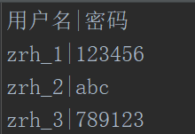
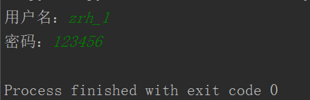

原文连接:https://www.cnblogs.com/zrh918/p/11708008.html
题目：
基于文件实现用户登录程序，提示用户输入用户名和密码，检查用户名是否存在，以及用户名密码是否正确
保存密码的文件叫user.txt，内容：

| 作分隔符
阶段一：
自己第一次的答案：
1 list_1 = []
2 with open("user.txt",mode="r+",encoding="utf-8") as count:
3 user = input("用户名：")
4 passwd = input("密码：")
5 for i in count:
6 val_1 = i.strip().split("|")
7 list_1.append(val_1[0])
8 if user in list_1:
9 for line in count:
10 val = line.strip().split("|")
11 if user == val[0] :
12 if passwd == val[1]:
13 print("登陆成功")
14 else:
15 print("密码错误")
16 else:
17 print("无此用户名")输出结果：
（1）可以顺利运行检查用户名不存在的程序
（2）但是当输入正确的用户名和答案的时候，出现了问题

心里os： 明明我输入的用户名和密码是正确的为什么没有print正确的结果，而是没有任何值呢，我****，到底哪里出现了问题
我检查了半天，还是没有检查出来，就开始心烦气躁，开始怀疑自己是不是不适合编程。
等到冷静下来的时候，原来才发现是指针出现了问题，第5行的for循环完成以后，指针已经是在最后的位置了，所以当第9行继续遍历时，就没有内容了。
oh，我天，我想杀死自己，这明明就是自己不细心导致的呀，最后只能说自己是第一次写文件的操作，可以理解来掩盖过去。
阶段二：
之后我进行了改正，并对11-15行进行了自认为的优化，下面是优化后的代码：
1 list_1 = []
2 with open("user.txt",mode="r+",encoding="utf-8") as count:
3 user = input("用户名：")
4 passwd = input("密码：")
5 for i in count:
6 val_1 = i.strip().split("|")
7 list_1.append(val_1[0])
8 if user in list_1:
9 count.seek(0)
10 for line in count:
11 val = line.strip().split("|")
12 if user == val[0] and passwd == val[1]:print("登陆成功")
13 else:
14 print("密码错误")
15 break
16 else:
17 print("无此用户名")我在第9行将指针调整了，然后对12--15行的判断用户名密码是否正确做了优化，下面看看输出结果
输出结果：
（1）可以顺利运行检查用户名不存在的程序
（2）但当我输入正确的用户名密码时，打脸时刻来了

心里os：我明明输入正确的用户密码为啥又出错了，哎呀我烦死了，啥嘛，为了一个简单的题浪费我一个多小时，哎，气死我了
等待我心情平复之后，仔细审阅发现，原来是自己第13行的else级别不对，因为在题目中可以看到user.txt第一行数据是
用户名|密码
所以第10行的for循环之后，第一个出现的是 用户名|密码 这个数据，我输入的又是zrh_ 1 后面第12行的语句中有一个 and 语句
and具有惰性求值，我输入user不等于 用户名，就会执行第13行的else了，于是乎便出现了问题
阶段三：
改正之后做了可行性的代码优化
1 list_1 = []
2 with open("user.txt",mode="r+",encoding="utf-8") as count:
3 user = input("用户名：")
4 passwd = input("密码：")
5 for i in count:
6 val_1 = i.strip().split("|")
7 list_1.append(val_1[0])
8 if user in list_1:
9 count.seek(0)
10 for line in count:
11 val = line.strip().split("|")
12 if user == val[0]:
13 if passwd == val[1]:print("登陆成功")
14 else:print("密码错误")
15 else:
16 print("无此用户名")ok，这个题到此结束
感悟：以后遇到问题要心平气和的排查问题，千万不要怀疑自己不适合干编程
牢记文件操作时的指针位置对程序的影响，牢记for循环后的else的逻辑